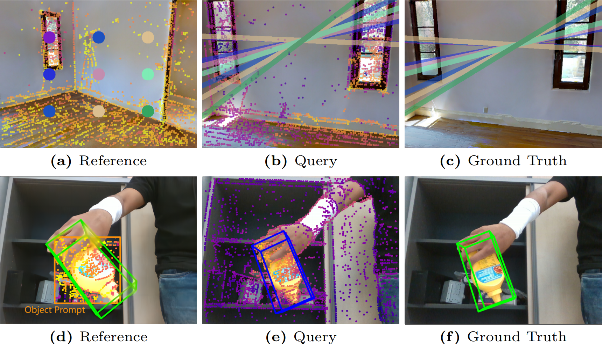

|
Rui Yin
I'm currently a research assistant at Hanglok-Tech in Shenzhen, advised by Dr. Biao Jia and Prof. Yulun Zhang. Previously, I studied at the University of Hong Kong in the MSc in Computer Science programme, and eventually withdrew in 2023. I received my BE Degree from the School of Computer Science and Engineering, Sun Yat-sen University in 2022.
I am looking for a PhD opportunity in 2025 Fall!
Email /
CV /
Google Scholar /
Github
|
|
Research
My current research interests focus on 3D vision (e.g. camera/object pose estimation), and deep model compression (e.g. quantization). I have also worked in bioinformatics before.
|
|

|
SRPose: Two-view Relative Pose Estimation With Sparse Keypoints
Rui Yin,
Yulun Zhang,
Zherong Pan,
Jianjun Zhu,
Cheng Wang,
and Biao Jia
ECCV, 2024
project page
/
arXiv
/
Github
SRPose: A Sparse keypoint-based framework for Relative Pose estimation between two views in both camera-to-world and object-to-camera scenarios.
|
|
|
Identifying Spatial Domain by Adapting Transcriptomics With Histology Through Contrastive Learning
Yuansong Zeng*,
Rui Yin*,
Mai Luo,
Jianing Chen,
Zixiang Pan,
Yutong Lu,
Weijiang Yu,
and Yuedong Yang
Briefings in Bioinformatics, 2023
|
|
|
Spatial Transcriptomics Prediction From Histology Jointly Through Transformer and Graph Neural Networks
Yuansong Zeng,
Zhuoyi Wei,
Weijiang Yu,
Rui Yin,
Yuchen Yuan,
Bingling Li,
Zhonghui Tang,
Yutong Lu,
and Yuedong Yang
Briefings in Bioinformatics, 2022
|
|
{kind=link}